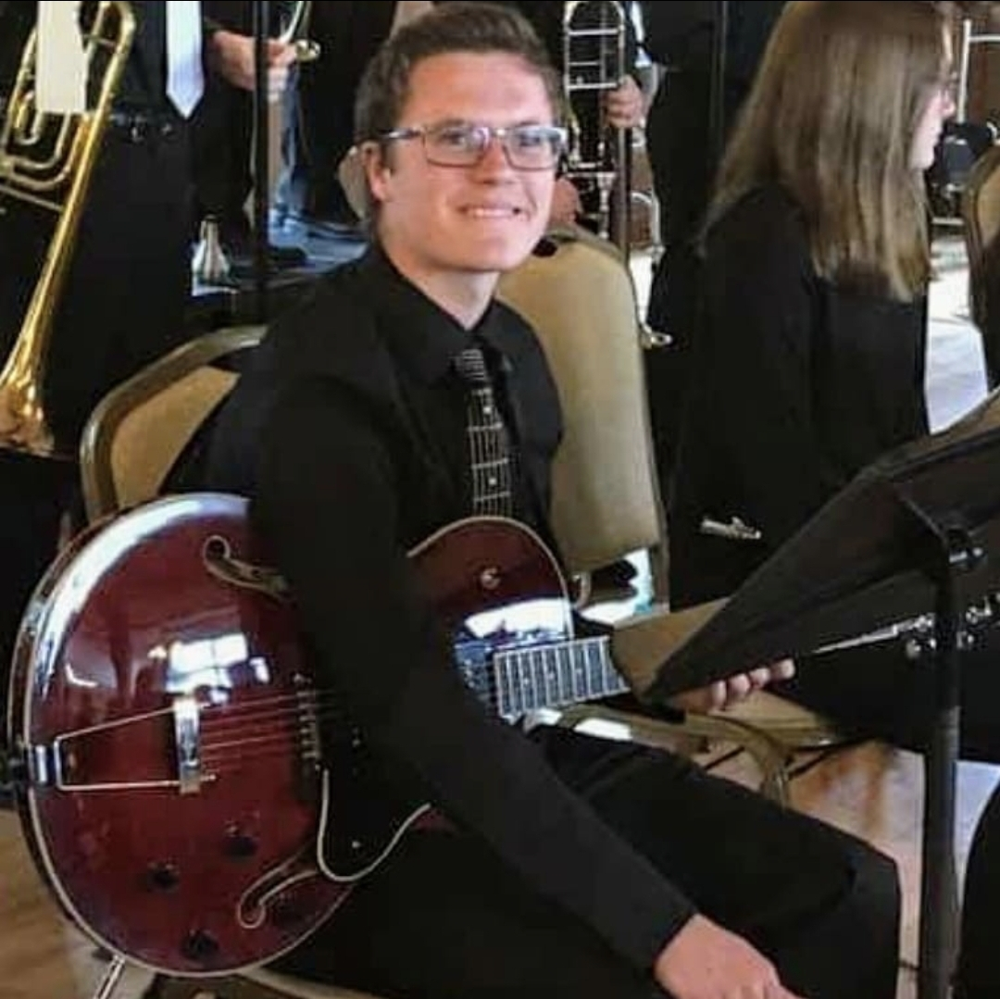
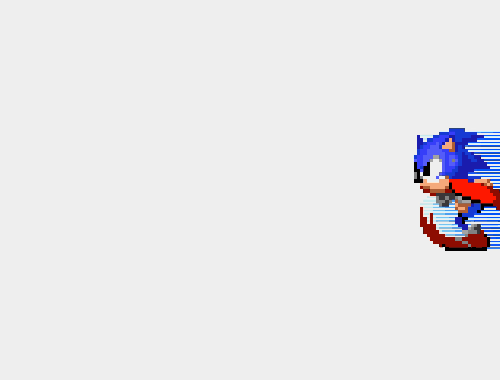
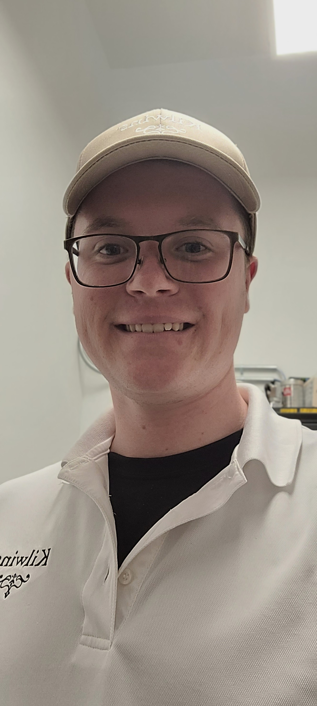
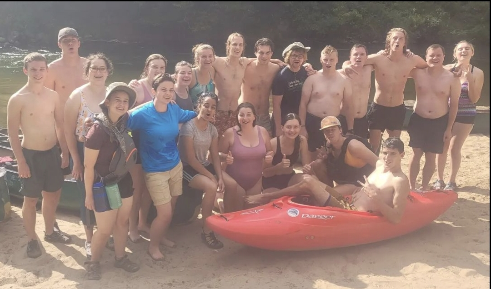
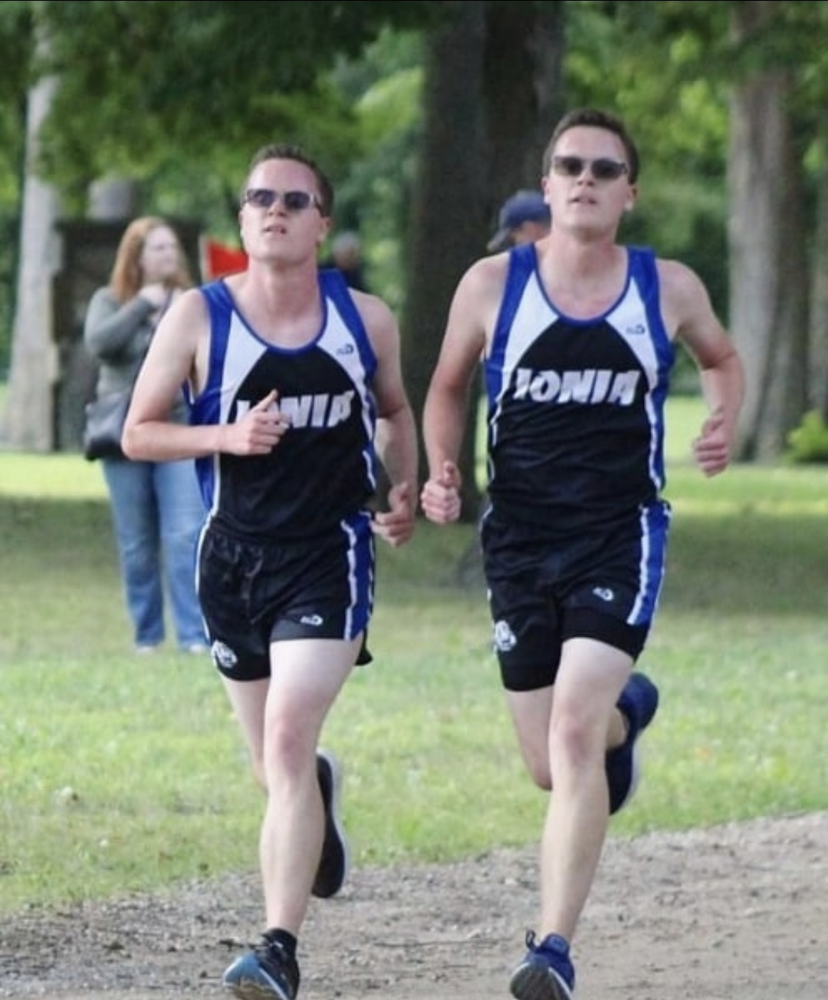
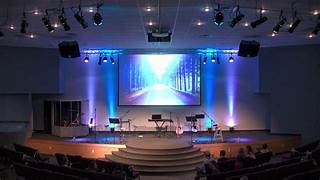
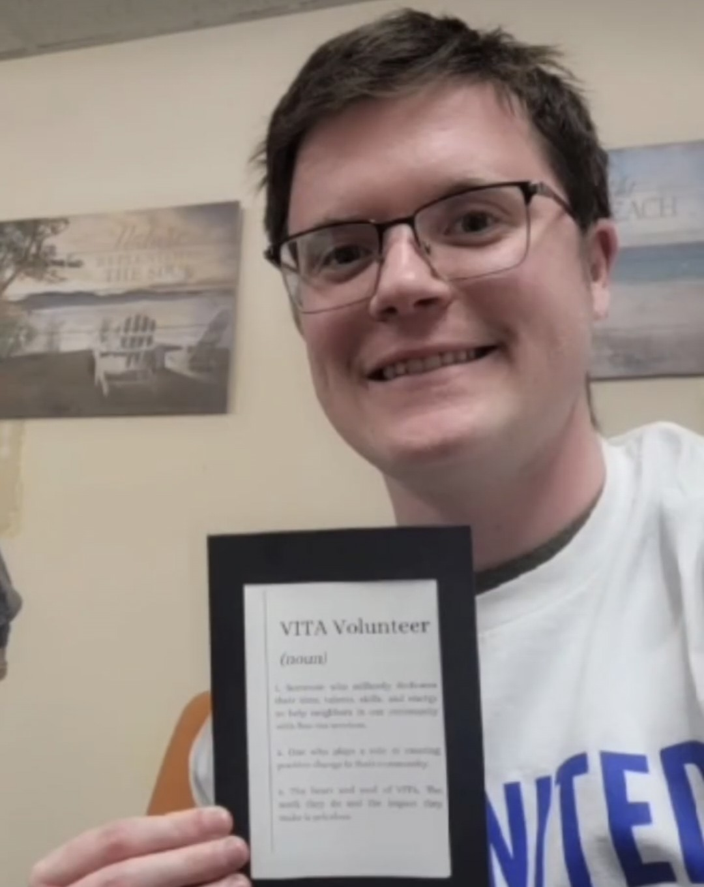
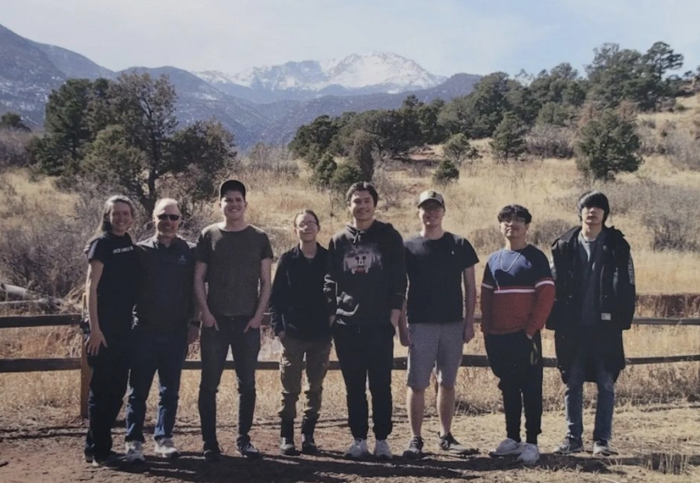
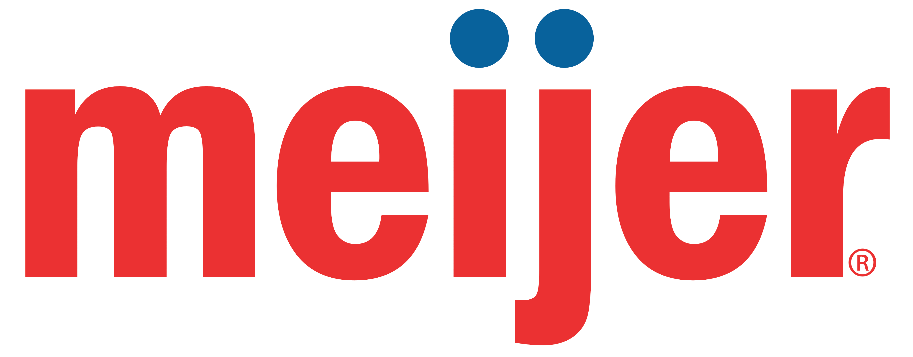
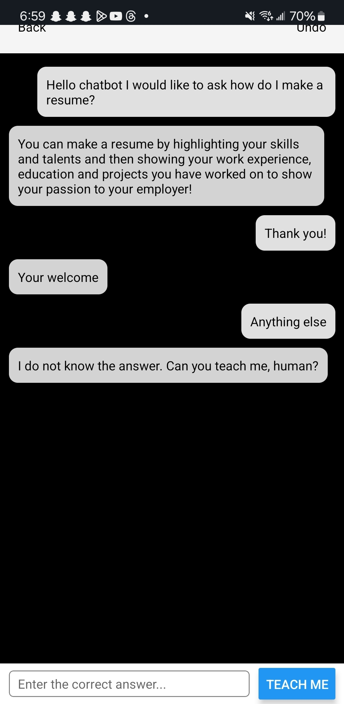

Why Branden Husted?
Dear future employer,
I am writing to express my keen interest in the opportunity to contribute to your business.
I love to go running, play music on guitar, and I love to code and solve problems, all of which have given me a strong foundation of discipline, creativity, and technical skills.
I have a strong foundation in technical skills and I find creative ways to use my skills from the classroom in the real world like my student grader position for computer science I have on my resume. I learn to have a passion for continuous learning, and a commitment to excellence and I believe these traits could be a valuable asset to your business.
My upbringing was significantly influenced by my involvement in the Boy Scouts, where I proudly achieved the rank of Eagle Scout.
This experience ingrained in me the values of leadership, perseverance, and dedication. Furthermore, my active participation in Cross Country, Track, Marching Band, and Jazz Band throughout high school honed my abilities in teamwork and discipline.
I was deeply involved with Outreach Christian Church in Lake Odessa, where I joined the worship band and played guitar for the congregation.
Through this experience, I developed a profound relationship with God, feeling that my contribution served as a beacon for my church and inspired others to support our community.
My commitment to faith and service led me to pursue higher education at a private Christian college called Calvin University in my new declared major, computer science.
I love computer science because I love learning new things and challenging myself to dream big and open up more opportunities for other people.
I have learned so much in my time at Calvin and I have loved meeting new people and broading my new professional network. I am excited about the possibility of including you in my network as well!
I was told as I grew up to never quit what I started and to give your all in everything that you do. I am enthusiastic about the possibility of discussing how my background can be an asset to your team.
Sincerely,
Branden Husted
Fun Activites Branden Enjoys
I played Guitar in my High School's Jazz band for 7 years and I really enjoyed it! I challenged myself to learn complicated chords and I took lessons outside of class. I also had a few solos to rock hard during concerts!
My love for playing Guitar led me to love technology because of the experimental nature and constant leaning Jazz Band had instilled in me.

I enjoy multiplayer video games like Super Smash Bros and Mario Kart. I also enjoy RPGs like Final Fantasy and Octopath Traveler. Although what I am really enjoying right now is the fast exhilarating gameplay and music of Sonic games. Sonic music also uses a lot of guitar which I really enjoy and the guitar licks really sound cool and makes me want to play them!

One of my favorite jobs I have worked so far was a fudge shop in Mackinac island called Kilwins because I was able to demonstrate customer service and communicate effectively. This skill can help a ton in the feild of tech where communication is getting so much more important.
I also worked in the dining hall as a student worker while in school and this job expanded on my teamwork skills while being in a assembly line putting food on plates for students.

Another one of my favorite jobs was when I was a student researcher on a open source project called PyStage. Where we (me and my partner Loya) helped develop a program to convert Scratch programs to Python equilvalent programs.
We seeked to help new programmers bridge the gap between blocks-based programming to text-based programming. I worked on the back-end and front-end of the project helping develop functions that worked in python exactly the same as they do in Scratch using PyGame.
I also was able to present my work in Washington DC for the American Association for the Advancement of Science.

In College I loved to go camping on the weekends and go kayaking and hiking because it reminded me Boy Scouts and how even being a computer scientist I still love the outdoors and the memories made on our wacky adventures. This one picture you see below is from a trip our entire dorm did together! We had a blast in the water and we camped at a near by campsite the next night.

I love to run and I try to keep fit and healthy. I did Cross Country and Track in High School and I continued to run on my own throughout college. I beleive it is very important to keep yourself in shape because it benefits your mood and helps you study better.
In the picture below I am neck to neck with my twin brother, who do you think will win?

I am very involved with my church and I use to play for the church's band and I have had a new love for God ever since that experience. I am a Christian and I try my best to be proactive in sharing my faith. I joined a group at college that takes time every other week to go downtown in Grand Rapids Michigan to preach the Gospel.

I make an effort to do community service for my community. VITA was a program I was involved in that helped people get returns for their taxes. I was also involved in a living learning community in my Junior year of college where we did 20 hours a community service per semester.

I participated in a Codeathon in Colorado Springs where I helped develop Alexa support for an app called Babel that is used now to help missionaries learn ubscure languages in Africa and other places in the world. I thought this was a great opportunity to network and expand my skills outside of the classroom. This event lasted the week of spring break in my freshman year of college.

The place I have worked the longest at is Meijer and I strived everyday to help our local store be as successful as they possibility could be. I loved working there because the work enviroment Meijer has built and maintained was excellent. I worked hard everyday and my boss told me that she was so happy everyday I showed up to work.

I worked on a React project that has two ways to use AI. This is what caused my to want to do a Build Project and get a certification. You can tell the AI your answers to your questions or you can use a standard built in database.
This option was created becuase I felt as if AI was making problem solving skills go extinct. Now you can still ask questions and have answers for later but you have to work to solve your question. You can find all my work on github, my username is brandenHusted.

I enjoy being at church and I have spent a lot of time at Ada Bible Church while at Calvin University away from home where I am in a youth group and we dive deep into the Bible and I have made some amazing friends and I can not wait to see what God has planned for my life in the future! Thanks for reading!
Click here to play the Bible Quiz game I have created with javascript, hope you enjoy!